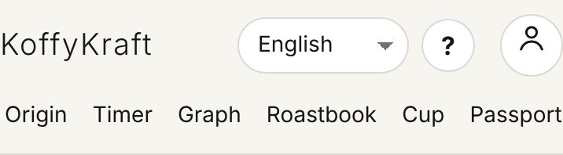
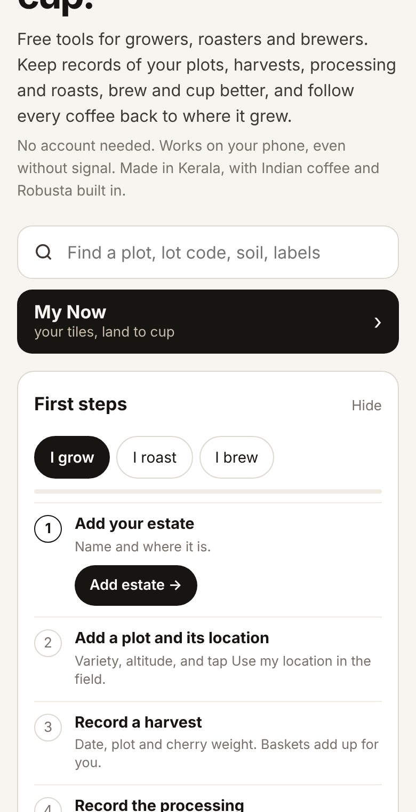
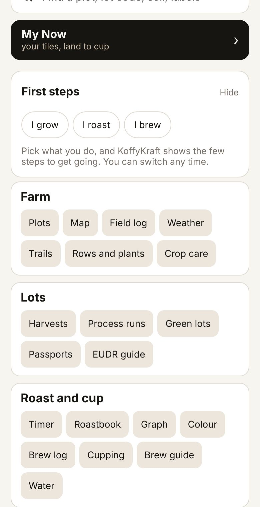
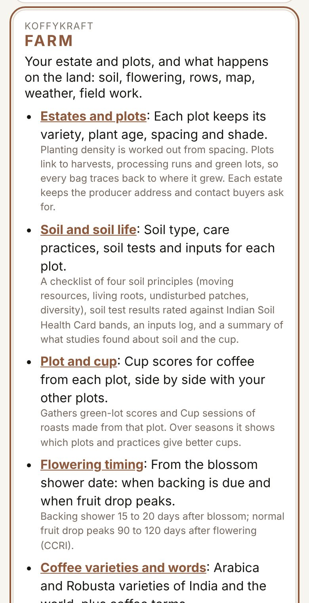
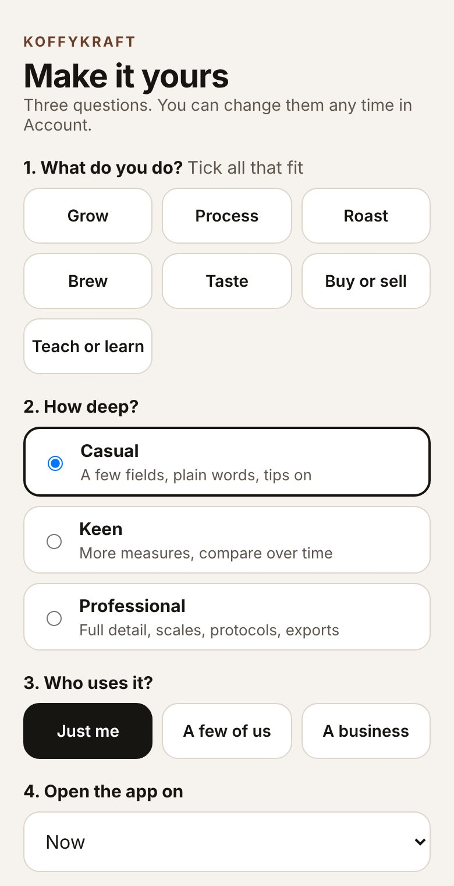
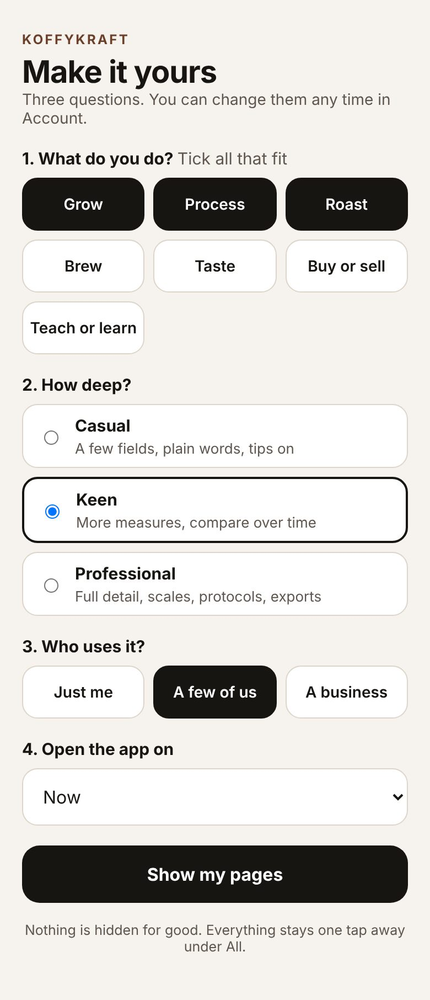
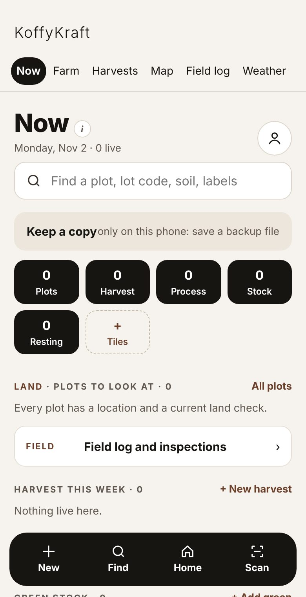
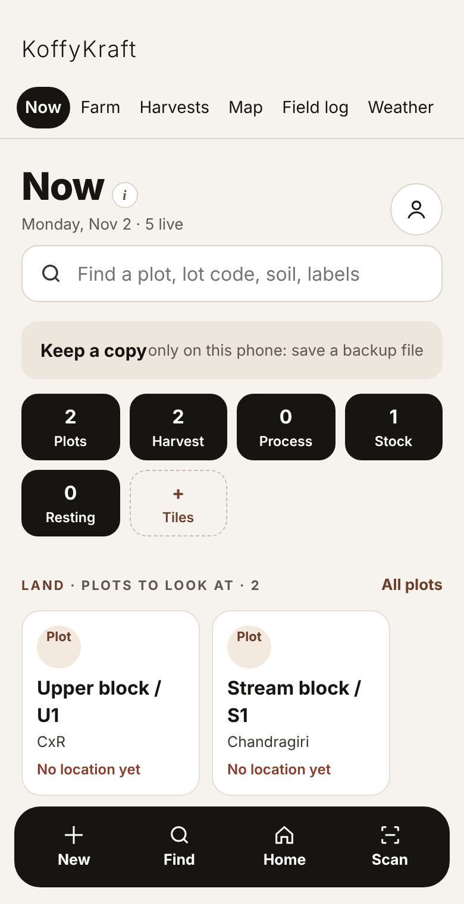
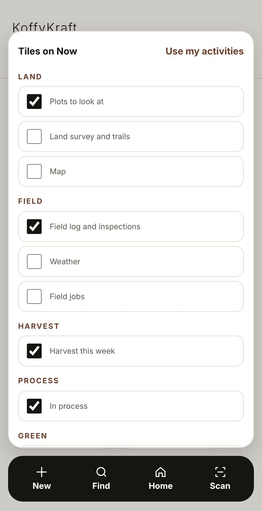

Part 1 Getting started · Chapter 3
Your first day
A walk around the app before you record anything: Home, the menu and the ?, Make it yours, the Now page and its tiles, and Find.
What this part is for
Ten minutes here saves an hour later. You will learn where things are, tell the app what you do so your own pages come first, and see how to find any record again.
Home
The first time you open Roast it opens on Home. Home is the map of the whole app: every part is one tap away from here.
At the top is the bar you will see on every page.

The top bar on Home From left to right: KoffyKraft (tap it to come back to Home), the language box, the ?, and the round person button. Below them is the menu, which scrolls sideways.
Under the welcome words is the Find box (Find a plot, lot code, soil, labels) and the dark My Now button. More on both below.
First steps helps you start. Tap I grow, I roast or I brew. You will see a short numbered list for that kind of work, with a button for the first step. For a grower it starts with Add your estate.

First steps after tapping I grow Tap Hide when you no longer need it.
Further down, the groups Farm, Lots, Roast and cup and Business hold a button for each part of the app.

The groups on Home
The ? and the person button
- The ? opens the guide at the part about the page you are on. With a signal it opens the full guide on koffykraft.coffee; without one, the guide kept inside the app.

- The person button opens Me: your activity on this phone, and links to Account and sign-in, Shared spaces and My data.
Make it yours
Make it yours asks what you do, so the pages you use most come first. Nothing is hidden: everything else stays one tap away.
Open it from Home (the Make it yours button near the bottom), from the card on Now, or later from Account, where it shows your answers and a Change link.

Make it yours, before any answers What do you do? Tick every one that fits: Grow, Process, Roast, Brew, Taste, Buy or sell, Teach or learn.
How deep? Pick Casual, Keen or Professional.
Who uses it? Pick Just me, A few of us or A business. If more than one person uses it, Team joins your pages.
Open the app on: choose the page Roast should open on from now on. Now is the usual choice; a roaster may prefer the Roast timer, a brewer the Brew log.

Make it yours, answered for a small farm that grows, processes and roasts Tap Show my pages. You land on Now.
You will see the menu change on every page. It now starts with Now, then your own pages (up to seven), then All and Account. Before you answer, the menu stays as it was, so nothing moves without you asking.
Now
Now is the page for today. It shows what is live on this phone: plots to look at, harvests this week, runs in process, green stock and roasts resting.

The tiles across the top count what is live. Tap a tile to jump to its section further down.

Now with a few records Tap the dashed Tiles tile to choose which tiles Now shows. They are grouped from land to cup. Use my activities ticks the ones that match your answers in Make it yours.

Choosing tiles Each section has its own quick button on the right, such as + New harvest, + New run, + Add green and + Start roast.
My pages lists your pinned pages. Tap Edit to change them.
Done shelf keeps finished work by coffee season (October to September) and month, so Now stays short.
The bar at the bottom stays in reach of your thumb: New opens a menu to add a harvest, process run, reading, green lot, roast, brew or cup, colour reading or plot. Find opens Find. Home goes to Home. Scan reads a KoffyKraft QR code with the camera, or from a saved photo or screenshot.

The New menu
Find
Find looks through your records, the app's sections and its pages at once.
Type in the Find box on Home or Now, or tap Find on the bottom bar.
Type part of a name or code. A plot name, a lot code like G261024-1, or a word like soil. You will see Your records first, each with its kind on the right (Plot, Green lot and so on).

Find, searching for "upper" Tap a result to open it.
You will see Searched on this phone. Works with no signal. under the results.